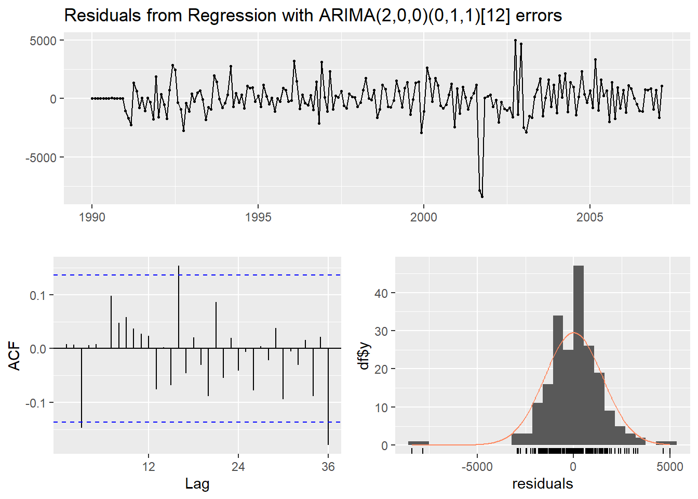
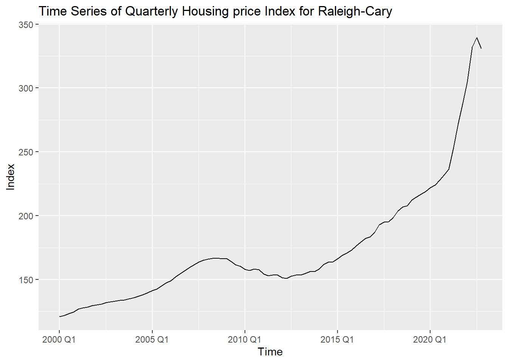
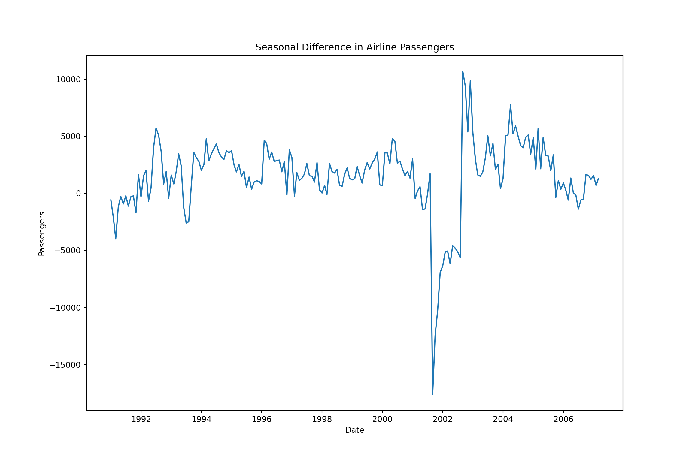
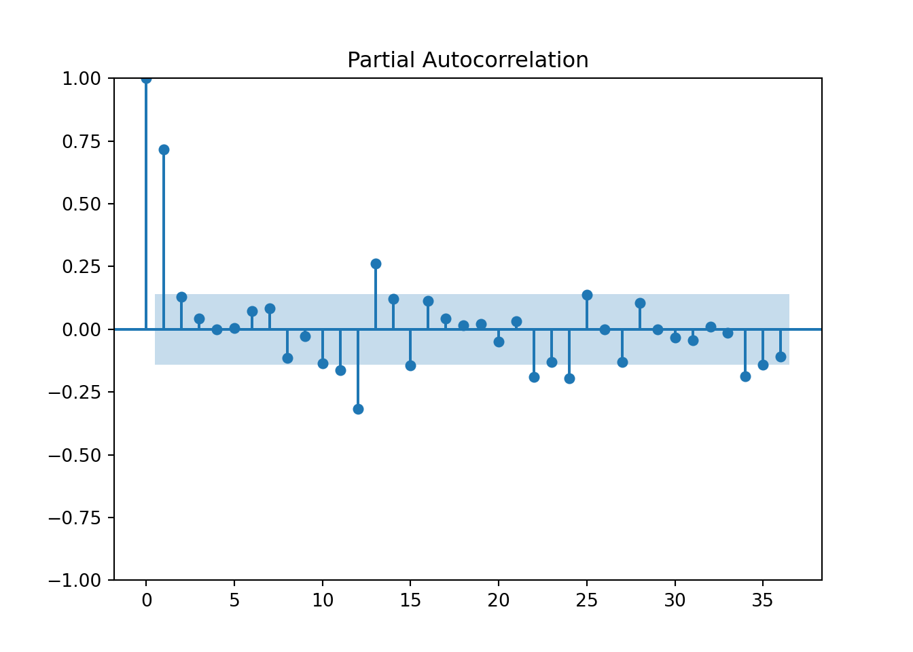

Chapter 5 Seasonality
Seasonality is the component of the time series that represents the effects of the seasonal variation within the dataset. This seasonal effect can be thought of as repetitive behavior that occurs every S time periods. Here, S is the seasonal period that gets repeated every S units of time. Remember though that seasonal data is not stationary. This is because the series itself does not revert to an overall, constant mean.
Let’s explore the U.S. airline passenger data from 1990 to 2007.
First, we load the dataset into a time series object using the ts function. We use the start = option to define the starting point for our dataset, which is Janurary of 1990. The frequency = specifies the length of the seasonal period in our dataset. Our data is monthly with an annual seasonal pattern, so our frequency here is 12. From there we split our data into two pieces - training and testing - using the subset function. For the training set, we are subsetting the data to exclude the last 12 months. These last 12 months will be our test data set.
# Load the Data
Passenger <- ts(USAirlines$Passengers, start = 1990, frequency =12)
autoplot(Passenger) + labs(title="Time Series plot for Passengers", x="Date",y="Passengers")
# Create training set from overall Airlines Data
training <- subset(Passenger, end = length(Passenger)-12)
# Create test set from overall Airlines Data
test <- subset(Passenger, start = length(Passenger)-11)Now, let’s explore our training data by looking at a time series decomposition. This time series decomposition breaks down the data into three pieces - season, trend, and error.
# Time Series Decomposition ...STL#
decomp_stl <- stl(Passenger, s.window = 7)
# Plot the individual components of the time series
plot(decomp_stl)
From the above plot we can see the annual season of our data as well as the upward trending pattern. We do have a shock to the system from the September 11 attacks. This impacted US airline travel for a number of months. We will have to account for this in our modeling as we go along. We can even see this shock in the error term of our decomposition as it resulted in large errors that were out of pattern of the rest of the data.
A great first place to start with any time series dataset is to build an exponential smoothing model. Exponential smoothing models are great first models as they are easy to build and relatively accurate. This allows us to set a baseline to try and beat with more sophisticated modeling approaches.
To build a Holt-Winters exponential smoothing model to account for both the trend and seasonality in our data, we use the hw function. With the seasonal = option we can specify whether our data has additive or multiplicative seasonality. The initial = option just specifies that the initial values of the HW model are optimized in the actual model building process as compared to just estimated with a simple calculation like the overall mean. The h = specifies that we want to forecast 12 time periods into the future on our training dataset.
# Fit Holt-Winters ESM (multiplicative seasonality) on training data
HWES.USAir.train <- hw(training, seasonal = "multiplicative", initial='optimal', h=12)Now that we have our model, let’s plot the forecast as well as evaluate this forecast with our test dataset. The mean element in the ESM model object gives the 12 month forecast that we specified above. We can look at the difference between this forecast and our test dataset - what actually happened in those 12 months. From there we calculate the MAE and MAPE of this forecast. The autoplot function is used to visualize the forecast itself.
# Calculate prediction errors from forecast
HW.error <- test - HWES.USAir.train$mean
# Calculate prediction error statistics (MAE and MAPE)
HW.MAE <- mean(abs(HW.error))
HW.MAPE <- mean(abs(HW.error)/abs(test))*100
HW.MAE## [1] 1134.58## [1] 1.763593autoplot(HWES.USAir.train)+
autolayer(fitted(HWES.USAir.train),series="Fitted")+ylab("Airlines Passengers")+ geom_vline(xintercept = 2007.25,color="orange",linetype="dashed")
From the output above, we see that we have an MAE of 1134.58 and a MAPE of 1.76%. This gives us a good baseline to try and beat with further modeling approaches.
5.1 Seasonal Unit Root Testing
Exponential smoothing models do not require data to be stationary. However, ARIMA models do require stationary data for modeling. Since seasonal data is not stationary, we must account for this lack of stationarity in one of two broad categories of approaches - deterministic solutions and stochastic solutions.
Some examples of deterministic solutions to seasonality are seasonal dummy variables, Fourier transforms, and predictor variables. The stochastic solution to seasonality is taking a seasonal difference. Be careful, as the choice of these solutions will matter for modeling. This is why we need to evaluate which approach we need using seasonal unit root testing. Similar to trending data, unit root testing allows us to determine if differencing is the proper solution to make our seasonal data stationary. There are many tests for seasonal unit-root testing. Each test is a little different on what the null and alternative hypotheses are so we must be careful to know what we are looking it with results.
The nsdiffs function runs seasonal unit root tests and reports the number of seasonal differences that are needed for your dataset. If 0, that does not mean your data is stationary. It just means that your seasonality cannot be solved with differencing. If more than 0, then seasonal differencing is the solution to the seasonality problem of our data.
## [1] 1cbind("Airlines Passengers" = training,
"Annual change in Passengers" = diff(training, 12)) %>%
autoplot(facets=TRUE) +
xlab("Time") + ylab("") +
ggtitle("Comparison of Differenced Data to Original")
We can see from the output above that we need one seasonal difference to account for the seasonality in our dataset. That means we need to solve our seasonality stochastically. The plot shows both the original data as well as the differenced data. This is not the end of our unit root testing however. There might still be a “regular” unit root in our data. Our data does not appear to be trending, but it still might contain a unity root. Again, we will want to test for whether our data requires an additional difference or whether it is stationary.
The ndiffs function applied to the differenced data will help with this. The diff function is used with a lag = 12 to take our seasonal difference.
## [1] 0From above we see that we require no more additional differencing. Since our data no longer appears to have a trend or season, we are ready to go to ARIMA modeling.
5.2 Deterministic Solutions
If our dataset required a deterministic solution instead of a stochastic one, how would we go about solving this? Again, our dataset does not need a deterministic solution, but let’s explore how we would solve seasonality deterministically for completion sake.
Unlike trend, there are many different approaches to accounting for seasonality deterministically. The approaches we will discuss are seasonal dummy variables, Fourier transforms, and predictor variables.
5.2.1 Seasonal Dummy Variables
Seasonal dummy variables are exactly what their name implies. We will use a set of dummy variables to account for the seasonal effects in our dataset. For a time series with S periods within a season, there will be S-1 dummy variables - one for each period (and one accounted for with the intercept). Since our dataset is monthly, we will build a dummy variable for each month and pick one to not include. For example, we could build the following model:
\[ Y_t = \beta_0 + \beta_1JAN + \beta_2FEB + \cdots + \beta_{11}NOV + e_t \]
In the above model, we chose to leave out the month of December’s dummy variable since our model has an intercept. In fact, the intercept \(\beta_0\) is the average effect of December. Each of the coefficients on the respective variables measures the average difference in effect from that month and December (our reference level).
There are a lot of ways to build month variables in a dataset. You could extract month from a time stamp variable for example. Here, we create our own month variable by repeating the values 1 to 12 across our dataset using the rep function. We then convert this to a factor with the factor function as well as set the reference level using the relevel function.
## Warning in Month + 1:12: longer object length is not a multiple of shorter
## object lengthBy using an lm function we can see how building a linear regression with this factor variable would look. This is the exact same thing that is going on with the modeling in our data. If we were to use this factor variable in an ARIMA modeling function like auto.arima, the function will first build a linear regression and then evaluate which ARIMA model we need on the residuals from our model. Essentially, this “removes” the impact of the season from our dataset. The auto.arima function’s xreg = option is how we incorporate any external variables (here our dummy variables) into the model. The seasonal = FALSE option tells the function to not try and account for season itself since we are accounting for it with seasonal dummy variables.
##
## Call:
## lm(formula = training ~ M)
##
## Residuals:
## Min 1Q Median 3Q Max
## -16257.2 -6848.9 484.4 6368.3 14699.6
##
## Coefficients:
## Estimate Std. Error t value Pr(>|t|)
## (Intercept) 48761.5 2002.3 24.353 <2e-16 ***
## M1 -4461.9 2792.1 -1.598 0.1116
## M2 -5433.9 2792.1 -1.946 0.0531 .
## M3 4099.8 2792.1 1.468 0.1436
## M4 814.9 2831.7 0.288 0.7738
## M5 1951.8 2831.7 0.689 0.4915
## M6 4844.6 2831.7 1.711 0.0887 .
## M7 7504.9 2831.7 2.650 0.0087 **
## M8 7297.4 2831.7 2.577 0.0107 *
## M9 -3242.5 2831.7 -1.145 0.2536
## M10 1064.1 2831.7 0.376 0.7075
## M11 -1268.2 2831.7 -0.448 0.6548
## ---
## Signif. codes: 0 '***' 0.001 '**' 0.01 '*' 0.05 '.' 0.1 ' ' 1
##
## Residual standard error: 8256 on 195 degrees of freedom
## Multiple R-squared: 0.2097, Adjusted R-squared: 0.1651
## F-statistic: 4.703 on 11 and 195 DF, p-value: 2.227e-06M.Matrix <- model.matrix(~M)
Trend <- 1:length(training)
SD.ARIMA <- auto.arima(training, xreg = M.Matrix[,2:12], method="ML", seasonal = FALSE)
summary(SD.ARIMA)## Series: training
## Regression with ARIMA(1,1,1) errors
##
## Coefficients:
## ar1 ma1 drift M1 M2 M3 M4
## 0.4291 -0.7971 120.7193 -3947.9234 -5040.2954 4372.9568 1776.4739
## s.e. 0.1142 0.0773 47.0864 485.1706 583.2628 625.8812 653.3688
## M5 M6 M7 M8 M9 M10
## 2774.0849 5538.2040 8074.5435 7745.458 -2914.0368 1275.6712
## s.e. 664.7044 667.9357 665.0333 655.108 633.9267 589.7313
## M11
## -1168.3551
## s.e. 486.9724
##
## sigma^2 = 3751115: log likelihood = -1844.41
## AIC=3718.82 AICc=3721.34 BIC=3768.74
##
## Training set error measures:
## ME RMSE MAE MPE MAPE MASE
## Training set -13.62138 1865.287 1119.102 -0.182277 2.399052 0.4156649
## ACF1
## Training set -0.002848384There are some advantages and disadvantages to the seasonal dummy variable approach. The advantages are that the model’s seasonal dummy variables have some nice interpretability. They tells us the average impact each seasonal component has on the target variable. It is also a rather straight-forward approach to implement. The main disadvantages however are that if your seasonal is especially long or complex, seasonal dummy variables are burdensome. Also, the constant effect of each season that is assumed may not be appropriate.
5.2.2 Fourier Transforms
Harmonic regression using Fourier transforms is another approach to account for seasonality deterministically. Fourier showed that a series of sine and cosine terms of the right frequencies approximate periodic patterns in a data series. To do this, we add Fourier variables to a regression model to account for the seasonal pattern. The odd terms \(k=1,3,5\) etc. are accounted for with sine variables:
\[ X_{k, t} = \sin(k \times \frac{2\pi t}{S}) \]
The even terms \(k = 2, 4, 6\) etc. are accounted for with cosine variables:
\[ X_{k, t} = \cos(k \times \frac{2\pi t}{S}) \]
In fact, if you add the same number of Fourier variables as you have seasonal dummy variables, you will get the same predictions. However, we typically do not need all of the Fourier variables, especially with large values of S. We need to decide how many of these values we need. One way to approach this is to build many models, while increasing the number of Fourier terms in the models and compare them all via a metric like BIC.
Here, we loop through the first 6 Fourier terms to account for seasonality. We do this by adding the fourier function to the auto.arima function through the xreg = option. All of this is contained within a loop where we gradually increase the number of Fourier terms in the regression. The K = option in the fourier function does this. We loop through the first 6 Fourier terms (half of the seasonal length) and record the training BIC for each model. This BIC is reported on a plot with the 6 different forecasts (one from each model). The gridExtra package’s grid.arrange function allows the plots to all be put together.
plots <- list()
for (i in seq(6)) {
fit <- auto.arima(training, xreg = fourier(training, K = i),
seasonal = FALSE, lambda = NULL)
plots[[i]] <- autoplot(forecast::forecast(fit,
xreg = fourier(training, K=i, h=12))) +
xlab(paste("K=",i," BIC=",round(fit$bic,2))) +
ylab("") + ylim(30000,80000)
}
gridExtra::grid.arrange(
plots[[1]],plots[[2]],plots[[3]],
plots[[4]],plots[[5]],plots[[6]], nrow=3)
From the above output we see that the best model had 6 Fourier terms. So we can build this model to account for the seasonality in our dataset.
## Series: training
## Regression with ARIMA(1,1,1) errors
##
## Coefficients:
## ar1 ma1 drift S1-12 C1-12 S2-12 C2-12
## 0.4290 -0.7970 120.7058 -1232.2457 -4334.8854 313.8882 677.9354
## s.e. 0.1142 0.0773 47.1023 270.2779 270.3897 194.1303 193.6314
## S3-12 C3-12 S4-12 C4-12 S5-12 C5-12 C6-12
## -2561.0644 1291.4579 413.8962 208.5872 2314.2561 274.0745 341.9422
## s.e. 152.7954 153.1546 130.4231 130.6592 118.9866 119.5061 81.8781
##
## sigma^2 = 3751119: log likelihood = -1844.41
## AIC=3718.82 AICc=3721.34 BIC=3768.74
##
## Training set error measures:
## ME RMSE MAE MPE MAPE MASE
## Training set -13.57507 1865.288 1119.122 -0.1821497 2.399082 0.4156723
## ACF1
## Training set -0.002822253There are some advantages and disadvantages of the Fourier term approach to accounting for seasonality. The main advantage is that Fourier terms can handle long and complex seasonality. In fact, for multiple seasons in a dataset, we can add more Fourier variables at different frequencies to account for this. The disadvantages of the Fourier approach are that the Fourier terms themselves are not really interpretable and that we need to use trial and error to find the “right” amount of variables to use.
After removing the seasonality through deterministic solutions, the remaining error term (residuals) are modeled with seasonal ARIMA models. The key to these new seasonal ARIMA models is that there still might be effects at seasonal lags in the dataset, even though the main seasonality is accounted for.
5.3 Stochastic Solutions
The stochastic approach has been hinted at above. When a stochastic solution is best to solve seasonality, we need to take seasonal differences. A difference on a season is when we look at the difference between the current point and the same point in the previous season: \(Y_t - Y_{t-S}\). For our dataset, it can be thought of as the year over year change in our data.
Here the ggtsdisplay function allows us to see the actual difference along with its correlation pattern with ACF and PACF plots. Notice, we are looking at these ACF and PACF plots with regards to the differences on the training data using the diff function with lag = 12 specifying the length of the difference being the same as our season.

After we remove the seasonal effect through stochastic approaches, the remaining differences are modeled with seasonal ARIMA models. The key to these new seasonal ARIMA models is that there still might be effects at seasonal lags in the dataset, even though the main seasonality is accounted for.
There are some limitations to differencing. Differencing is hard to evaluate for long and complex seasons due to the statistical tests for stochastic differencing typically ended at a season length of 24. Therefore, long and/or complex seasons are typically best approached with deterministic solutions. In fact, it is hard to imagine a difference being very long in terms of time points logically. For example, if you had daily data and thought you had an annual season, it is hard to imagine there is an actual impact of Jan 26 from last year on Jan 26 of this year.
5.4 Seasonal ARIMA Modeling
When extending the ARIMA model framework to the seasonal ARIMA framework, we add another set of terms - P, D, Q, and S. Notice how these terms are capitalized.
\[ ARIMA(p, d, q)(P, D, Q)_S \]
The terms represent the number of seasonal AR terms (\(P\)), the number of seasonal MA terms (\(Q\)), and the number of seasonal differences (\(D\)). The length of the season is still defined as \(S\). Seasonal ARIMA models have the same structure and approach as typical ARIMA models with AR and MA patterns in the ACF and PACF. THe main difference is that the pattern is just on the seasonal lag instead of the individual lags. For example, if you had an \(ARIMA(0,0,0)(1,0,0)_{12}\) model, then the ACF would have an exponentially decreasing pattern every 12 lags while the PACF only had a single spike at lag 12. The pattern is the same, but it is only seen on the season since we are dealing with the seasonal lag. The opposite would be true for an \(ARIMA(0,0,0)(0,0,1)_{12}\) model. The PACF would have an exponentially decreasing pattern every 12 lags while the ACF only had a single spike at lag 12.
For our data we can try the \(ARIMA(1,0,0)(1,1,1)_{12}\) model using the Arima function. With either the ggtsdisplay function on the residuals, or the checkresiduals function on the model object, we can see that the model still doesn’t capture all of the signal and pattern in the dataset.
# Seasonal ARIMA
training %>%
Arima(order=c(1,0,0), seasonal=c(1,1,1)) %>%
residuals() %>% ggtsdisplay()
## Series: training
## ARIMA(1,0,0)(1,1,1)[12]
##
## Coefficients:
## ar1 sar1 sma1
## 0.9056 0.0917 -0.672
## s.e. 0.0364 0.1091 0.093
##
## sigma^2 = 4126436: log likelihood = -1763.94
## AIC=3535.88 AICc=3536.09 BIC=3548.97
##
## Training set error measures:
## ME RMSE MAE MPE MAPE MASE ACF1
## Training set 338.6503 1956.379 1156.221 0.5565257 2.418163 0.4294517 -0.2622466
##
## Ljung-Box test
##
## data: Residuals from ARIMA(1,0,0)(1,1,1)[12]
## Q* = 45.934, df = 21, p-value = 0.001304
##
## Model df: 3. Total lags used: 24We can still use the auto.arima function to select the “best” starting point model for us as well. We can use the original data in this function along with the seasonal = TRUE option to allow the function to take the seasonal difference for us.
## Series: training
## ARIMA(1,0,1)(0,1,1)[12] with drift
##
## Coefficients:
## ar1 ma1 sma1 drift
## 0.8800 -0.2962 -0.6785 124.9788
## s.e. 0.0454 0.0950 0.0600 23.6330
##
## sigma^2 = 3639517: log likelihood = -1751.67
## AIC=3513.34 AICc=3513.66 BIC=3529.7
##
## Training set error measures:
## ME RMSE MAE MPE MAPE MASE ACF1
## Training set -4.332616 1832.54 1055.07 -0.1745474 2.217472 0.3918815 0.01300462
##
## Ljung-Box test
##
## data: Residuals from ARIMA(1,0,1)(0,1,1)[12] with drift
## Q* = 21.957, df = 21, p-value = 0.402
##
## Model df: 3. Total lags used: 24Above we can see that the auto.arima function selected the \(ARIMA(1,0,1)(0,1,1)_{12}\) model. By using the checkresiduals function we see that we are left with white noise after our modeling. We still have a large outlier that we will have to account for in the next section on dynamic regression.
We can use the forecast function with h = 12 to forecast the next 12 observations in our dataset. Similar to the exponential smoothing model above, we plot the forecast as well as evaluate the MAE and MAPE from this model.
## Point Forecast Lo 80 Hi 80 Lo 95 Hi 95
## Apr 2007 63889.23 61444.35 66334.12 60150.11 67628.36
## May 2007 65213.49 62382.40 68044.59 60883.71 69543.27
## Jun 2007 68462.20 65364.91 71559.48 63725.31 73199.09
## Jul 2007 71439.69 68151.01 74728.37 66410.09 76469.29
## Aug 2007 68975.83 65546.25 72405.40 63730.75 74220.90
## Sep 2007 57619.49 54084.66 61154.33 52213.43 63025.56
## Oct 2007 62959.30 59345.04 66573.56 57431.77 68486.83
## Nov 2007 61127.43 57452.84 64802.02 55507.63 66747.23
## Dec 2007 62364.86 58644.21 66085.50 56674.63 68055.09
## Jan 2008 58193.22 54437.30 61949.14 52449.04 63937.41
## Feb 2008 56375.46 52592.44 60158.48 50589.83 62161.08
## Mar 2008 68502.52 64698.65 72306.39 62685.00 74320.04autoplot(forecast::forecast(S.ARIMA, h = 12)) + autolayer(fitted(S.ARIMA), series="Fitted") +
ylab("Airlines Passengers") +
geom_vline(xintercept = 2007.25,color="orange",linetype="dashed")
S.ARIMA.error <- test - forecast::forecast(S.ARIMA, h = 12)$mean
# Calculate prediction error statistics (MAE and MAPE)
S.ARIMA.MAE <- mean(abs(S.ARIMA.error))
S.ARIMA.MAPE <- mean(abs(S.ARIMA.error)/abs(test))*100
S.ARIMA.MAE## [1] 1229.206## [1] 1.885399From the above output we see that our seasonal ARIMA did not beat the Holt-Winters exponential smoothing model in terms of MAE or MAPE. That outlier might be impacting the estimation of our model, so we will have to address that.
The default for the Arima function in R (which is what auto.arima is built off of) uses the multiplicative approach to seasonal ARIMA models. To get an additive seasonal ARIMA model instead we need to use the fixed = option in the Arima function to specify exactly what terms we want to estimate instead as shown below. The zeroes are for terms we do not want to estimate, while the NA values will be estimated by the function.
# Additive Seasonal ARIMA
S.ARIMA <- Arima(training, order=c(1,0,13), seasonal=c(0,1,0),
fixed=c(NA,NA,0,0,0,0,0,0,0,0,0,0,NA,NA), method="ML",)
summary(S.ARIMA)## Series: training
## ARIMA(1,0,13)(0,1,0)[12]
##
## Coefficients:
## ar1 ma1 ma2 ma3 ma4 ma5 ma6 ma7 ma8 ma9 ma10 ma11
## 0.9679 -0.3698 0 0 0 0 0 0 0 0 0 0
## s.e. 0.0237 0.0880 0 0 0 0 0 0 0 0 0 0
## ma12 ma13
## -0.6612 0.2490
## s.e. 0.0626 0.0766
##
## sigma^2 = 3792723: log likelihood = -1755.53
## AIC=3521.07 AICc=3521.39 BIC=3537.43
##
## Training set error measures:
## ME RMSE MAE MPE MAPE MASE ACF1
## Training set 216.2511 1870.713 1094.634 0.3140324 2.29433 0.4065768 0.023000175.5 Python Code for Seasonality
import pandas as pd
import numpy as np
import matplotlib.pyplot as plt
import statsmodels.api as sm
from statsmodels.graphics import tsaplots
from statsmodels.graphics import tsaplots
from statsmodels.tsa.seasonal import seasonal_decompose
from statsmodels.tsa.seasonal import STL
from statsmodels.tsa.arima_model import ARMA
from statsmodels.tsa.arima_model import ARIMA
from statsmodels.tsa.statespace.sarimax import SARIMAX
from statsmodels.tsa.holtwinters import SimpleExpSmoothing, Holt, ExponentialSmoothingusair = pd.read_csv("https://raw.githubusercontent.com/sjsimmo2/TimeSeries/master/usairlines.csv")
df=pd.date_range(start='1/1/1990', end='3/1/2008', freq='MS')
usair.index=pd.to_datetime(df)
training = usair.head(207)
test = usair.tail(12)plt.plot(training["Passengers"])
plt.xlabel("Date")
plt.ylabel("Passengers")
plt.title("Airline Passengers")
plt.show()
training['HWES_MUL'] = ExponentialSmoothing(training['Passengers'], trend='mul', seasonal='mul', seasonal_periods = 12).fit().fittedvalues## C:\PROGRA~3\ANACON~1\envs\R_Env2\lib\site-packages\statsmodels\tsa\holtwinters\model.py:915: ConvergenceWarning: Optimization failed to converge. Check mle_retvals.
## warnings.warn(
## <string>:1: SettingWithCopyWarning:
## A value is trying to be set on a copy of a slice from a DataFrame.
## Try using .loc[row_indexer,col_indexer] = value instead
##
## See the caveats in the documentation: https://pandas.pydata.org/pandas-docs/stable/user_guide/indexing.html#returning-a-view-versus-a-copytraining[['Passengers', 'HWES_MUL']].plot(title='Holt Winters Exponential Smoothing: Additive and Multiplicative Seasonality')
plt.show()fit = ExponentialSmoothing(training['Passengers'],trend='mul',seasonal='mul',seasonal_periods=12).fit()## C:\PROGRA~3\ANACON~1\envs\R_Env2\lib\site-packages\statsmodels\tsa\holtwinters\model.py:915: ConvergenceWarning: Optimization failed to converge. Check mle_retvals.
## warnings.warn(plt.cla()
fcast=fit.forecast(12)
ax = training["Passengers"].plot(figsize=(12,8))
fcast.plot(ax = ax,color = "orange")
plt.show()
## 2.02648128206835585.5.1 Seasonality
from statsmodels.tsa.stattools import adfuller
training["Passengers_diff"] = training["Passengers"] - training["Passengers"].shift(12)## <string>:1: SettingWithCopyWarning:
## A value is trying to be set on a copy of a slice from a DataFrame.
## Try using .loc[row_indexer,col_indexer] = value instead
##
## See the caveats in the documentation: https://pandas.pydata.org/pandas-docs/stable/user_guide/indexing.html#returning-a-view-versus-a-copyplt.cla()
plt.plot(training["Passengers_diff"].dropna())
plt.xlabel("Date")
plt.ylabel("Passengers")
plt.title("Seasonal Difference in Airline Passengers")
plt.show()
from statsmodels.tsa.stattools import adfuller
from statsmodels.tsa.stattools import kpss
adfuller(training["Passengers_diff"].dropna())## (-3.1193806884272663, 0.0251517817351501, 15, 179, {'1%': -3.4674201432469816, '5%': -2.877826051844538, '10%': -2.575452082332012}, 3265.477674996173)## (0.06877759490278168, 0.1, 8, {'10%': 0.347, '5%': 0.463, '2.5%': 0.574, '1%': 0.739})
##
## C:\PROGRA~3\ANACON~1\envs\R_Env2\lib\site-packages\statsmodels\tsa\stattools.py:2022: InterpolationWarning: The test statistic is outside of the range of p-values available in the
## look-up table. The actual p-value is greater than the p-value returned.
##
## warnings.warn(5.5.2 Deterministic Solutions
results = sm.OLS.from_formula("Passengers ~ C(Month)",
data=training).fit()
print(results.summary())## OLS Regression Results
## ==============================================================================
## Dep. Variable: Passengers R-squared: 0.210
## Model: OLS Adj. R-squared: 0.165
## Method: Least Squares F-statistic: 4.703
## Date: Thu, 07 Sep 2023 Prob (F-statistic): 2.23e-06
## Time: 21:25:06 Log-Likelihood: -2154.4
## No. Observations: 207 AIC: 4333.
## Df Residuals: 195 BIC: 4373.
## Df Model: 11
## Covariance Type: nonrobust
## ==================================================================================
## coef std err t P>|t| [0.025 0.975]
## ----------------------------------------------------------------------------------
## Intercept 4.43e+04 1945.888 22.766 0.000 4.05e+04 4.81e+04
## C(Month)[T.2] -971.9444 2751.901 -0.353 0.724 -6399.255 4455.366
## C(Month)[T.3] 8561.6667 2751.901 3.111 0.002 3134.356 1.4e+04
## C(Month)[T.4] 5276.8562 2792.077 1.890 0.060 -229.689 1.08e+04
## C(Month)[T.5] 6413.7386 2792.077 2.297 0.023 907.193 1.19e+04
## C(Month)[T.6] 9306.5033 2792.077 3.333 0.001 3799.958 1.48e+04
## C(Month)[T.7] 1.197e+04 2792.077 4.286 0.000 6460.252 1.75e+04
## C(Month)[T.8] 1.176e+04 2792.077 4.212 0.000 6252.723 1.73e+04
## C(Month)[T.9] 1219.3856 2792.077 0.437 0.663 -4287.160 6725.931
## C(Month)[T.10] 5525.9739 2792.077 1.979 0.049 19.429 1.1e+04
## C(Month)[T.11] 3193.7386 2792.077 1.144 0.254 -2312.807 8700.284
## C(Month)[T.12] 4461.9150 2792.077 1.598 0.112 -1044.630 9968.460
## ==============================================================================
## Omnibus: 41.204 Durbin-Watson: 0.065
## Prob(Omnibus): 0.000 Jarque-Bera (JB): 9.340
## Skew: -0.070 Prob(JB): 0.00937
## Kurtosis: 1.969 Cond. No. 12.7
## ==============================================================================
##
## Notes:
## [1] Standard Errors assume that the covariance matrix of the errors is correctly specified.import pmdarima as pm
model = pm.auto_arima(results.resid.dropna(), start_p = 0, start_q = 0, max_p = 5, max_q = 5, seasonal = False)
model.summary()| Dep. Variable: | y | No. Observations: | 207 |
|---|---|---|---|
| Model: | SARIMAX(1, 1, 1) | Log Likelihood | -1849.181 |
| Date: | Thu, 07 Sep 2023 | AIC | 3706.362 |
| Time: | 21:25:08 | BIC | 3719.673 |
| Sample: | 0 | HQIC | 3711.745 |
| - 207 | |||
| Covariance Type: | opg |
| coef | std err | z | P>|z| | [0.025 | 0.975] | |
|---|---|---|---|---|---|---|
| intercept | 59.9318 | 46.379 | 1.292 | 0.196 | -30.970 | 150.834 |
| ar.L1 | 0.4469 | 0.199 | 2.243 | 0.025 | 0.056 | 0.837 |
| ma.L1 | -0.7779 | 0.132 | -5.909 | 0.000 | -1.036 | -0.520 |
| sigma2 | 3.739e+06 | 1.17e+05 | 31.828 | 0.000 | 3.51e+06 | 3.97e+06 |
| Ljung-Box (L1) (Q): | 0.04 | Jarque-Bera (JB): | 12422.50 |
|---|---|---|---|
| Prob(Q): | 0.84 | Prob(JB): | 0.00 |
| Heteroskedasticity (H): | 2.47 | Skew: | -4.09 |
| Prob(H) (two-sided): | 0.00 | Kurtosis: | 40.15 |
Warnings:
[1] Covariance matrix calculated using the outer product of gradients (complex-step).
## <string>:1: SettingWithCopyWarning:
## A value is trying to be set on a copy of a slice from a DataFrame.
## Try using .loc[row_indexer,col_indexer] = value instead
##
## See the caveats in the documentation: https://pandas.pydata.org/pandas-docs/stable/user_guide/indexing.html#returning-a-view-versus-a-copytraining['x1'] = np.sin(2*np.pi*training['t']/12)
training['x2'] = np.cos(2*np.pi*training['t']/12)
training['x3'] = np.sin(4*np.pi*training['t']/12)
training['x4'] = np.cos(4*np.pi*training['t']/12)
training['x5'] = np.sin(6*np.pi*training['t']/12)
training['x6'] = np.cos(6*np.pi*training['t']/12)
training['x7'] = np.sin(8*np.pi*training['t']/12)
training['x8'] = np.sin(8*np.pi*training['t']/12)
training['x9'] = np.sin(10*np.pi*training['t']/12)
training['x10'] = np.sin(10*np.pi*training['t']/12)
training['x11'] = np.sin(12*np.pi*training['t']/12)
training['x12'] = np.sin(12*np.pi*training['t']/12)
results = sm.OLS.from_formula("Passengers ~ x1 + x2 + x3 + x4 + x5 + x6 + x7 + x8 + x9 + x10 + x12",
data=training).fit()
print(results.summary())## OLS Regression Results
## ==============================================================================
## Dep. Variable: Passengers R-squared: 0.208
## Model: OLS Adj. R-squared: 0.171
## Method: Least Squares F-statistic: 5.735
## Date: Thu, 07 Sep 2023 Prob (F-statistic): 4.59e-07
## Time: 21:25:08 Log-Likelihood: -2154.7
## No. Observations: 207 AIC: 4329.
## Df Residuals: 197 BIC: 4363.
## Df Model: 9
## Covariance Type: nonrobust
## ==============================================================================
## coef std err t P>|t| [0.025 0.975]
## ------------------------------------------------------------------------------
## Intercept 4.985e+04 572.188 87.118 0.000 4.87e+04 5.1e+04
## x1 -1373.6270 806.881 -1.702 0.090 -2964.860 217.606
## x2 -4060.3302 811.407 -5.004 0.000 -5660.489 -2460.171
## x3 328.2428 808.772 0.406 0.685 -1266.720 1923.206
## x4 677.0116 809.884 0.836 0.404 -920.144 2274.167
## x5 -2702.2477 807.278 -3.347 0.001 -4294.264 -1110.232
## x6 1270.4928 810.522 1.567 0.119 -327.921 2868.906
## x7 1.025e+13 2.45e+13 0.419 0.676 -3.8e+13 5.85e+13
## x8 -1.025e+13 2.45e+13 -0.419 0.676 -5.85e+13 3.8e+13
## x9 -7.4e+11 1.77e+12 -0.419 0.676 -4.22e+12 2.74e+12
## x10 7.4e+11 1.77e+12 0.419 0.676 -2.74e+12 4.22e+12
## x12 -8.206e+15 1.96e+16 -0.419 0.676 -4.68e+16 3.04e+16
## ==============================================================================
## Omnibus: 40.167 Durbin-Watson: 0.074
## Prob(Omnibus): 0.000 Jarque-Bera (JB): 9.220
## Skew: -0.064 Prob(JB): 0.00995
## Kurtosis: 1.974 Cond. No. 5.29e+15
## ==============================================================================
##
## Notes:
## [1] Standard Errors assume that the covariance matrix of the errors is correctly specified.
## [2] The smallest eigenvalue is 7.51e-30. This might indicate that there are
## strong multicollinearity problems or that the design matrix is singular.model = pm.auto_arima(results.resid.dropna(), start_p = 0, start_q = 0, max_p = 5, max_q = 5, seasonal = False)
model.summary()| Dep. Variable: | y | No. Observations: | 207 |
|---|---|---|---|
| Model: | SARIMAX(2, 1, 2) | Log Likelihood | -1856.739 |
| Date: | Thu, 07 Sep 2023 | AIC | 3725.477 |
| Time: | 21:25:10 | BIC | 3745.445 |
| Sample: | 0 | HQIC | 3733.553 |
| - 207 | |||
| Covariance Type: | opg |
| coef | std err | z | P>|z| | [0.025 | 0.975] | |
|---|---|---|---|---|---|---|
| intercept | 133.3130 | 85.874 | 1.552 | 0.121 | -34.996 | 301.622 |
| ar.L1 | -0.6113 | 0.165 | -3.702 | 0.000 | -0.935 | -0.288 |
| ar.L2 | 0.3801 | 0.169 | 2.253 | 0.024 | 0.049 | 0.711 |
| ma.L1 | 0.2189 | 0.129 | 1.697 | 0.090 | -0.034 | 0.472 |
| ma.L2 | -0.7437 | 0.133 | -5.598 | 0.000 | -1.004 | -0.483 |
| sigma2 | 3.956e+06 | 0.012 | 3.34e+08 | 0.000 | 3.96e+06 | 3.96e+06 |
| Ljung-Box (L1) (Q): | 0.02 | Jarque-Bera (JB): | 7485.39 |
|---|---|---|---|
| Prob(Q): | 0.88 | Prob(JB): | 0.00 |
| Heteroskedasticity (H): | 2.54 | Skew: | -3.22 |
| Prob(H) (two-sided): | 0.00 | Kurtosis: | 31.82 |
Warnings:
[1] Covariance matrix calculated using the outer product of gradients (complex-step).
[2] Covariance matrix is singular or near-singular, with condition number 1.21e+23. Standard errors may be unstable.
5.5.3 Stochastic Solution
df=pd.date_range(start='1/1/1990', end='3/1/2008', freq='MS')
usair.index=pd.to_datetime(df)
training = usair.head(207)
test = usair.tail(12)
training["Passengers_diff"] = training["Passengers"] - training["Passengers"].shift(12)## <string>:1: SettingWithCopyWarning:
## A value is trying to be set on a copy of a slice from a DataFrame.
## Try using .loc[row_indexer,col_indexer] = value instead
##
## See the caveats in the documentation: https://pandas.pydata.org/pandas-docs/stable/user_guide/indexing.html#returning-a-view-versus-a-copyplt.cla()
plt.plot(training["Passengers_diff"].dropna())
plt.xlabel("Date")
plt.ylabel("Passengers")
plt.title("Seasonal Difference in Airline Passengers")
plt.show()
from matplotlib import pyplot
from statsmodels.graphics.tsaplots import plot_acf
plot_acf(training['Passengers_diff'].dropna(), lags = 36)
pyplot.show()
from statsmodels.graphics.tsaplots import plot_pacf
plot_pacf(training['Passengers_diff'].dropna(), lags = 36)
pyplot.show()
5.5.4 Seasonal ARIMA
from statsmodels.tsa.statespace.sarimax import SARIMAX
model2 = SARIMAX(training['Passengers'], order = (1,0,0), seasonal_order = (1,1,1,12)).fit()
model2.summary()| Dep. Variable: | Passengers | No. Observations: | 207 |
|---|---|---|---|
| Model: | SARIMAX(1, 0, 0)x(1, 1, [1], 12) | Log Likelihood | -1814.636 |
| Date: | Thu, 07 Sep 2023 | AIC | 3637.272 |
| Time: | 21:25:14 | BIC | 3650.364 |
| Sample: | 01-01-1990 | HQIC | 3642.573 |
| - 03-01-2007 | |||
| Covariance Type: | opg |
| coef | std err | z | P>|z| | [0.025 | 0.975] | |
|---|---|---|---|---|---|---|
| ar.L1 | 0.5876 | 0.022 | 26.506 | 0.000 | 0.544 | 0.631 |
| ar.S.L12 | -0.2520 | 0.191 | -1.318 | 0.188 | -0.627 | 0.123 |
| ma.S.L12 | 0.0732 | 0.204 | 0.359 | 0.720 | -0.327 | 0.473 |
| sigma2 | 6.834e+06 | 5.89e-08 | 1.16e+14 | 0.000 | 6.83e+06 | 6.83e+06 |
| Ljung-Box (L1) (Q): | 0.71 | Jarque-Bera (JB): | 5457.43 |
|---|---|---|---|
| Prob(Q): | 0.40 | Prob(JB): | 0.00 |
| Heteroskedasticity (H): | 0.80 | Skew: | -3.28 |
| Prob(H) (two-sided): | 0.38 | Kurtosis: | 28.07 |
Warnings:
[1] Covariance matrix calculated using the outer product of gradients (complex-step).
[2] Covariance matrix is singular or near-singular, with condition number 3.25e+29. Standard errors may be unstable.
lag_test=[4,5,6,7,8,9,10,11,12,13]
## Not run
#for x in lag_test:
# sm.stats.acorr_ljungbox(model.resid, lags=[x], model_df=2)

model3 = pm.auto_arima(training['Passengers'], start_p = 0, start_q = 0, max_p = 5, max_q = 5, seasonal = True, m = 12)
model3.summary()| Dep. Variable: | y | No. Observations: | 207 |
|---|---|---|---|
| Model: | SARIMAX(1, 1, 1)x(2, 0, [], 12) | Log Likelihood | -1939.149 |
| Date: | Thu, 07 Sep 2023 | AIC | 3890.298 |
| Time: | 21:25:28 | BIC | 3910.265 |
| Sample: | 0 | HQIC | 3898.374 |
| - 207 | |||
| Covariance Type: | opg |
| coef | std err | z | P>|z| | [0.025 | 0.975] | |
|---|---|---|---|---|---|---|
| intercept | 12.8056 | 10.137 | 1.263 | 0.207 | -7.063 | 32.675 |
| ar.L1 | 0.7479 | 0.067 | 11.096 | 0.000 | 0.616 | 0.880 |
| ma.L1 | -0.9624 | 0.032 | -30.547 | 0.000 | -1.024 | -0.901 |
| ar.S.L12 | 0.4551 | 0.019 | 24.431 | 0.000 | 0.419 | 0.492 |
| ar.S.L24 | 0.2898 | 0.028 | 10.488 | 0.000 | 0.236 | 0.344 |
| sigma2 | 8.064e+06 | 0.000 | 5.02e+10 | 0.000 | 8.06e+06 | 8.06e+06 |
| Ljung-Box (L1) (Q): | 2.68 | Jarque-Bera (JB): | 3892.96 |
|---|---|---|---|
| Prob(Q): | 0.10 | Prob(JB): | 0.00 |
| Heteroskedasticity (H): | 0.86 | Skew: | -2.86 |
| Prob(H) (two-sided): | 0.52 | Kurtosis: | 23.52 |
Warnings:
[1] Covariance matrix calculated using the outer product of gradients (complex-step).
[2] Covariance matrix is singular or near-singular, with condition number 4.44e+26. Standard errors may be unstable.
model3 = SARIMAX(training['Passengers'], order = (1,0,1), seasonal_order = (0,1,1,12), trend = 't').fit()
model3.summary()| Dep. Variable: | Passengers | No. Observations: | 207 |
|---|---|---|---|
| Model: | SARIMAX(1, 0, 1)x(0, 1, 1, 12) | Log Likelihood | -1809.402 |
| Date: | Thu, 07 Sep 2023 | AIC | 3628.804 |
| Time: | 21:25:28 | BIC | 3645.169 |
| Sample: | 01-01-1990 | HQIC | 3635.430 |
| - 03-01-2007 | |||
| Covariance Type: | opg |
| coef | std err | z | P>|z| | [0.025 | 0.975] | |
|---|---|---|---|---|---|---|
| drift | 5.1211 | 1.369 | 3.741 | 0.000 | 2.438 | 7.804 |
| ar.L1 | 0.5632 | 0.048 | 11.626 | 0.000 | 0.468 | 0.658 |
| ma.L1 | -0.0459 | 0.096 | -0.480 | 0.632 | -0.234 | 0.142 |
| ma.S.L12 | -0.1773 | 0.025 | -7.111 | 0.000 | -0.226 | -0.128 |
| sigma2 | 5.126e+06 | 1.8e+05 | 28.548 | 0.000 | 4.77e+06 | 5.48e+06 |
| Ljung-Box (L1) (Q): | 6.60 | Jarque-Bera (JB): | 4042.93 |
|---|---|---|---|
| Prob(Q): | 0.01 | Prob(JB): | 0.00 |
| Heteroskedasticity (H): | 0.82 | Skew: | -2.92 |
| Prob(H) (two-sided): | 0.41 | Kurtosis: | 24.53 |
Warnings:
[1] Covariance matrix calculated using the outer product of gradients (complex-step).
plt.cla()
fcast2 = model3.forecast(12)
ax = training["Passengers"].plot(figsize=(12,8))
fcast2.plot(ax = ax,color = "orange")
plt.show()
## 1.3836946523828837